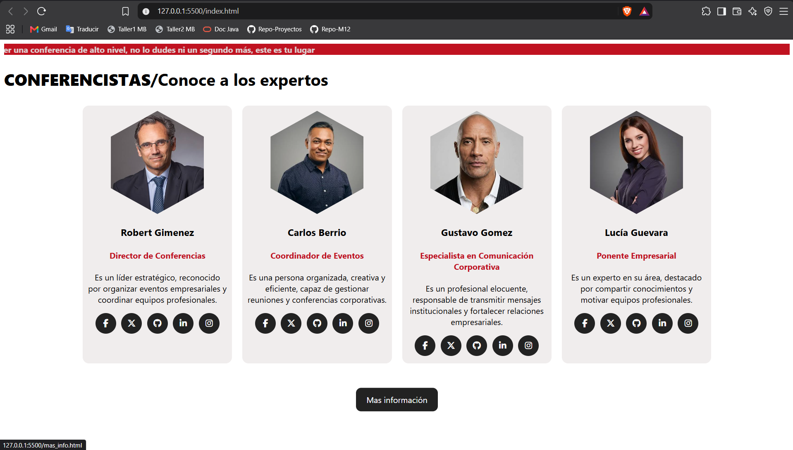

Cargo: Coordinador de eventos
Empresa: Innovatech Solutions
Periodo: Enero de 2024 – Diciembre de 2024
Responsabilidades: Coordiné conferencias empresariales, organicé cronogramas, gestioné invitados y apoyé la logística de eventos corporativos.
Estudiante de Ingeniería en Ciencia de Datos con una sólida formación en desarrollo backend, Java, Python, SQL y análisis de datos. Con experiencia en la creación de aplicaciones orientadas a objetos y actualmente ampliando mis habilidades en ingeniería de software, ingeniería de datos e inteligencia artificial (información ficticia).
Empresa: Innovatech Solutions
Periodo: Enero de 2024 – Diciembre de 2024
Responsabilidades: Coordiné conferencias empresariales, organicé cronogramas, gestioné invitados y apoyé la logística de eventos corporativos.
Acerca de mí: La presentación personal y la experiencia laboral aquí presentadas son completamente ficticias y se utilizan exclusivamente con fines académicos.

Página web que presenta conferencistas mediante tarjetas con información individual y enlaces para consultar más detalles. El proyecto utiliza HTML y CSS para organizar los elementos visuales, aplicar estilos y mejorar la distribución del contenido.
Página de conferencistas repositorioPágina web personal desarrollada con HTML para presentar información personal, formación académica y perfil profesional. El proyecto aplica una estructura organizada de contenido y etiquetas HTML para construir una presentación clara y fácil de consultar.
Hoja de vida Repositorio